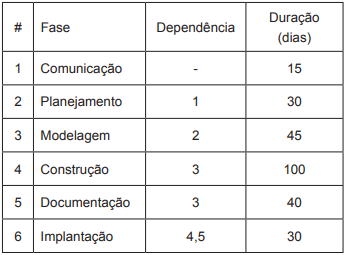

Um engenheiro de software planejou o desenvolvimento de um novo projeto, com prazo máximo de 220 dias, em seis fases: comunicação, planejamento, modelagem, construção, documentação e implantação. As fases seriam realizadas na sequência em que foram listadas. Exceção foi feita para as fases de construção e a documentação, que poderiam ocorrer em paralelo. Entretanto, a fase de implantação só poderia ocorrer se tanto construção quanto documentação estivessem encerradas.
A tabela a seguir apresenta a duração de cada fase do plano de desenvolvimento proposto.Tabela - Fases e respectivas dependências e durações
FONTE: Provas e Gabaritos Enade
Considerando o uso do Método do Caminho Crítico, e que o projeto tem prazo máximo de 220 dias, com início no dia 1, avalie as seguintes afirmações.
I. A data mínima para o início da fase de implantação é o dia 191.
II. O projeto possui um caminho crítico, que é 1-2-3-5-6.
III. A folga livre da atividade documentação é de 60 dias.
É correto apenas o que se afirma em: